Before we can write our first program, we need to learn how to create new programs within our Integrated Development Environment (IDE). In this lesson, we’ll cover how to do that, and you’ll also compile and execute your first program!
Projects
To write a C++ program inside an IDE, we typically start by creating a new project (we’ll show you how to do this in a bit). A project is a container that holds all of your source code files, images, data files, etc… that are needed to produce an executable (or library, website, etc…) that you can run or use. The project also saves various IDE, compiler, and linker settings, as well as remembering where you left off, so that when you reopen the project later, the state of the IDE can be restored to wherever you left off. When you choose to compile your program, all of the .cpp files in the project will get compiled and linked.
Each project corresponds to one program. When you’re ready to create a second program, you’ll either need to create a new project, or overwrite the code in an existing project (if you don’t want to keep it). Project files are generally IDE specific, so a project created for one IDE will need to be recreated in a different IDE.
Best practice
Create a new project for each new program you write.
Console projects
When you create a new project, you’ll generally be asked what type of project you want to create. All of the projects that we will create in this tutorial will be console projects. A console project means that we are going to create programs that can be run from the Windows, Linux, or Mac console.
Here’s a screenshot of the Windows console:
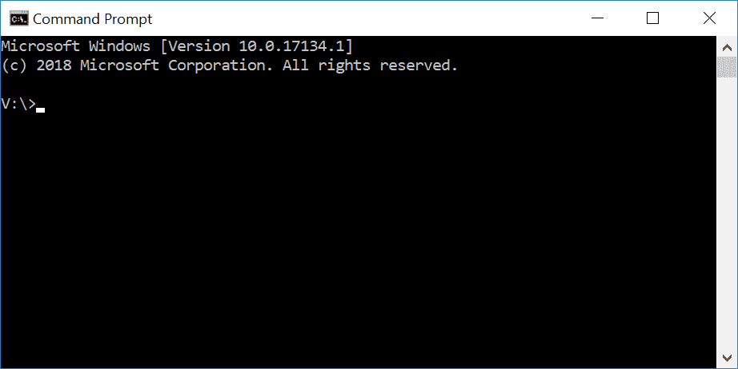
By default, console applications have no graphical user interface (GUI), they print text to the console, read input from the keyboard, and are compiled into stand-alone executable files. This is perfect for learning C++, because it keeps the complexity to a minimum, and ensures things work on a wide variety of systems.
Don’t worry if you’ve never used a console before, or don’t know how to access it. We’ll compile and launch our programs through our IDEs (which will invoke the console when necessary).
Workspaces / solutions
When you create a new project for your program, many IDEs will automatically add your project to a “workspace” or a “solution” (the term varies by IDE). A workspace or solution is a container that can hold one or more related projects. For example, if you were writing a game and wanted to have a separate executable for single player and multiplayer, you’d need to create two projects. It wouldn’t make sense for both of these projects to be completely independent — after all, they are part of the same game. Most likely, each would be configured as a separate project within a single workspace/solution.
Although you can add multiple projects to a single solution, we generally recommend creating a new workspace or solution for each program, especially while learning. It’s simpler and there’s less chance of something going wrong.
Writing your first program
Traditionally, the first program programmers write in a new language is the infamous hello world program, and we aren’t going to deprive you of that experience! You’ll thank us later. Maybe.
Creating a project in Visual Studio 2019 (or newer)
When you run Visual Studio 2019 (or newer), you should see a dialog that looks like this:
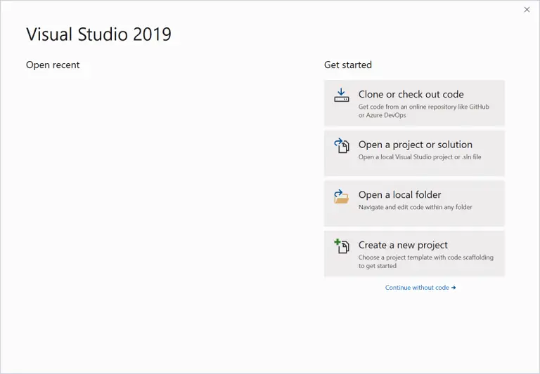
Select Create a new project.
You’ll then see a dialog that looks like this:
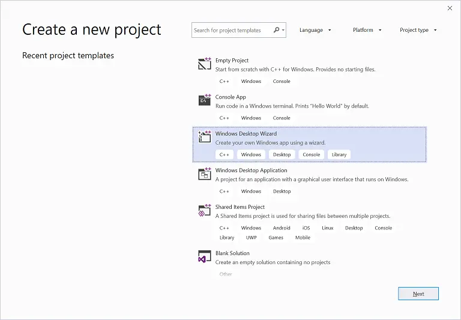
If you’ve already opened a prior project, you can access this dialog via the File menu > New > Project.
Select Windows Desktop Wizard and click Next. If you don’t see this, then you probably forgot to choose to install the Desktop development with C++ workload when you installed Visual Studio. In that case, go back to lesson 0.6 — Installing an Integrated Development Environment (IDE) and reinstall your Visual Studio as indicated (note: rather than doing a full reinstall, you can run the Visual Studio installer and modify your existing installation to add the C++ workload).
Next, you’ll see a dialog that looks like this:
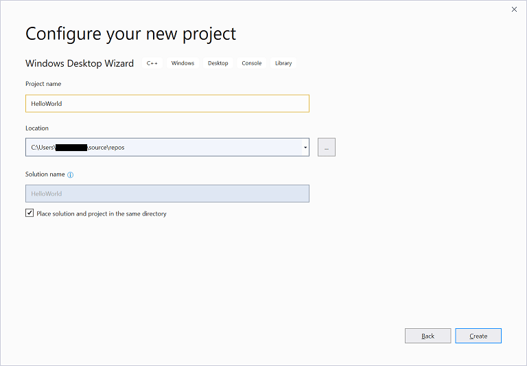
Replace the existing project name with HelloWorld.
It’s recommended that you also check the Place solution and project in the same directory, as this reduces the number of subdirectories that get created with each project.
Click Create to continue.
Finally, you’ll see one last dialog:
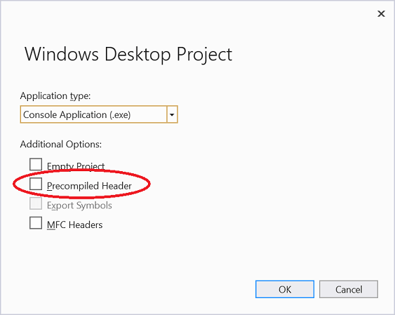
Make sure the Application type is set as Console Application (.exe) and that the Precompiled Header option is unselected. Then click OK.
You’ve now created a project! Jump down to the Visual Studio Solution Explorer section below to continue.
Q: What are precompiled headers and why are we turning them off?
In large projects (those with many code files), precompiled headers can improve compilation speed by avoiding some redundant compilation that tends to occur in larger projects.
However, precompiled headers require extra work to use, and for small projects (such as those you’ll create in our tutorials) make little to no difference in compilation times.
For this reason, we recommend turning precompiled headers off initially, and only enabling them later if and when you find your compilation times suffering.
Creating a project in Visual Studio 2017 or older
To create a new project in Visual Studio 2017 or older, go to the File menu > New > Project. A dialog box will pop up that looks something like this:
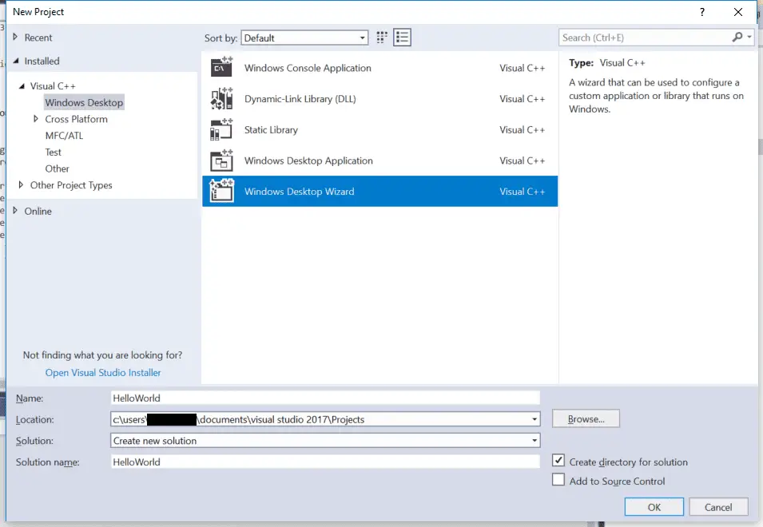
First, make sure Visual C++ is listed on the left side. If you don’t see Visual C++, then you probably forgot to choose to install the Desktop development with C++ workload when you installed Visual Studio. In that case, go back to lesson 0.6 — Installing an Integrated Development Environment (IDE) and reinstall your Visual Studio as indicated (note: rather doing a full reinstall, you can run the Visual Studio installer and modify your existing install to add the C++ workload).
If you’re using Visual Studio 2017 v15.3 or newer, underneath Visual C++, select Windows Desktop and then select Windows Desktop Wizard in the main window.
If you don’t see Windows Desktop as an option, you’re probably using an older version of Visual Studio. That’s fine. Instead, choose Win32 and then Win32 Console Application in the main window.
Down below, in the Name field, enter the name of your program (replace the existing name with HelloWorld). In the Location field, you can optionally select a different location for your project to be placed into. The default is fine for now.
Click OK. If you’re using an older version of Visual Studio, the Win32 Application Wizard will launch. Press Next.
At this point, you should see a wizard dialog that looks something like this (older versions of Visual Studio use a different style, but have most of the same options):
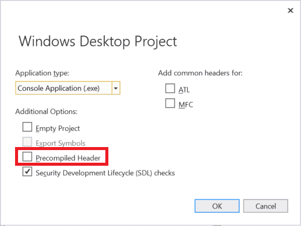
Make sure you uncheck Precompiled Header.
Then click Ok or Finish. Now your project is created!
Visual Studio Solution Explorer
On the left or right side of the window, you should see a window titled Solution Explorer. Inside this window, Visual Studio has created a solution for you (Solution ‘HelloWorld’). Within that, with the name in bold, is your new project (HelloWorld). Within the project, Visual Studio has created a number of files for you, including HelloWorld.cpp (underneath the Source Files tree item). You may also see some other .cpp or .h files, which you can ignore for now.
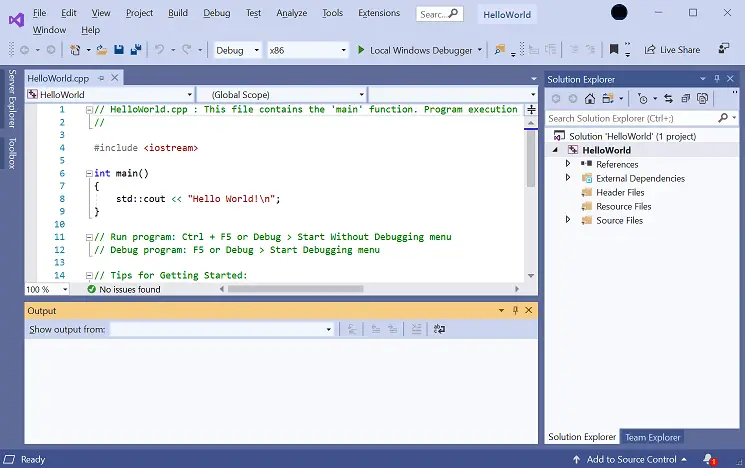
In the text editor, you will see that Visual Studio has already opened HelloWorld.cpp and created some code for you. Select and delete all of the code, and type/copy the following into your IDE:
#include <iostream>
int main()
{
std::cout << "Hello, world!";
return 0;
}To compile your program, either press F7 (if this doesn’t work, try Ctrl-Shift-B) or go to the Build menu > Build Solution. If all goes well, you should see the following appear in the Output window:
1>------ Build started: Project: HelloWorld, Configuration: Debug Win32 ------
1>HelloWorld.cpp
1>HelloWorld.vcxproj -> c:\users\alex\documents\visual studio 2017\Projects\HelloWorld\Debug\HelloWorld.exe
========== Build: 1 succeeded, 0 failed, 0 up-to-date, 0 skipped ==========
This means your compile was successful!
Q: I got error C1010 (“fatal error C1010: unexpected end of file while looking for precompiled header. Did you forget to add ‘#include “stdafx.h”’ to your source?”). What now?
You forgot to turn off precompiled headers when you created your project. Recreate your project (as per the instructions above) and make sure to disable precompiled headers.
To run your compiled program, press Ctrl-F5, or go to the Debug menu and choose Start Without Debugging. You will see something like the following:
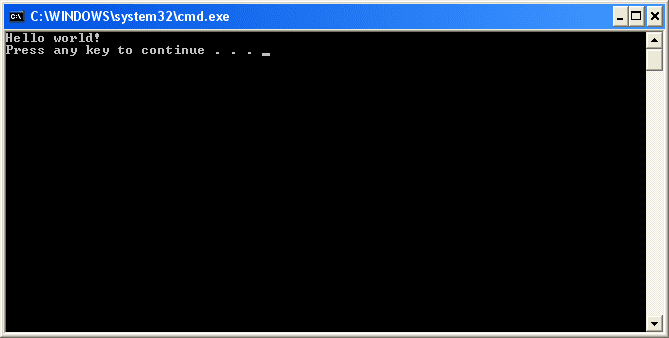
That is the result of your program! Congratulations, you’ve compiled and run your first program!
Related content
When you run a program directly from Visual Studio, you may see an additional line of output that looks something like this:
C:\Users\Alex\source\repos\Project6\Debug\Project6.exe (process 21896) exited with code 0.
This is normal. Visual Studio is providing some additional information about whether your program exited normally or abnormally. We discuss this further in lesson 2.2 — Function return values (value-returning functions).
Creating a project in Code::Blocks
To create a new project, go to File menu > New > Project. A dialog box will pop up that looks like this:
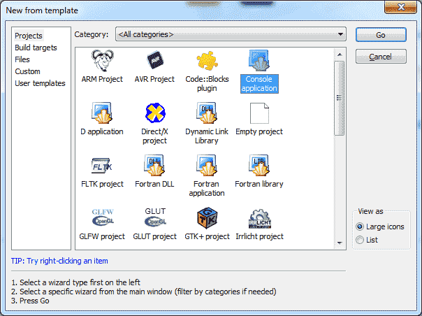
Select Console application and press the Go (or Create) button.
If you see a console application wizard dialog, press Next, make sure C++ is selected and press Next again.
Now you will be asked to name your project. Title the project HelloWorld. You can save it wherever you wish. On Windows, we recommend you to save it in a subdirectory of the C drive, such as C:\CBProjects.
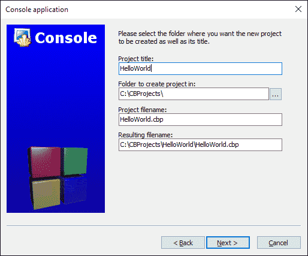
You may see another dialog asking you which configurations you want enabled. The defaults should be fine here, so select Finish.
Now your new project has been created.
On the left side of the screen, you should see a Management window, with the Projects tab selected. Inside that window, you’ll see a Workspace folder, with your HelloWorld project inside of it:
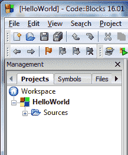
Inside the HelloWorld project, expand the Sources folder, and double click on “main.cpp”. You will see that a hello world program has already been written for you!
Replace that one with the following:
#include <iostream>
int main()
{
std::cout << "Hello, world!";
return 0;
}To build your project, press Ctrl-F9, or go to Build menu > Build. If all goes well, you should see the following appear in the Build log window:
-------------- Build: Debug in HelloWorld (compiler: GNU GCC Compiler)---------------
mingw32-g++.exe -Wall -fexceptions -g -std=c++14 -c C:\CBProjects\HelloWorld\main.cpp -o obj\Debug\main.o
mingw32-g++.exe -o bin\Debug\HelloWorld.exe obj\Debug\main.o
Output file is bin\Debug\HelloWorld.exe with size 1.51 MB
Process terminated with status 0 (0 minute(s), 0 second(s))
0 error(s), 0 warning(s) (0 minute(s), 0 second(s))
This means your compile was successful!
To run your compiled program, press Ctrl-F10, or go to Build menu > Run. You will see something similar to the following:
That is the result of your program!
For Linux users
Linux users may need to install the additional packages before Code::Blocks will compile. Please see the Code::Blocks installation instructions in lesson 0.6 — Installing an Integrated Development Environment (IDE) for more info.
Creating a project in VS Code
To start a new project, go to the View > Explorer menu (or press Ctrl-Shift-E). This will open the explorer pane. If you haven’t previously opened a project, you should see an Open Folder button in the explorer pane — press it. If there is already an open project and you want to start a new one, choose File > Open Folder from the top nav.
Inside the dialog that opens, create a new folder named HelloWorld and then select this folder. This folder will be your project folder.
Next, we need to create the file that will contain our source code. Choose File > New File from the top nav, or click the New File icon to the right of HELLOWORLD in the explorer pane.
Name your file main.cpp and add the following contents to it:
#include <iostream>
int main()
{
std::cout << "Hello, world!";
return 0;
}To compile main.cpp and run the program, make sure main.cpp is open in the main pane, and then either choose Run > Run Without Debugging from the top nav, or click the v to the right of the play icon to the right of main.cpp tab and choose Run C/C++ File.
Next, choose the g++ build and debug active file option (macOS users should choose clang++ instead of g++). Switch the tab from DEBUG CONSOLE to TERMINAL at the bottom of the window.
If the terminal contains the text “Hello, world!”, then congratulations, you’ve just run your first C++ program!
If you’re using g++ on the command line
In this case, you don’t need to create a project. Simply paste the following into a text file named HelloWorld.cpp and save your file:
#include <iostream>
int main()
{
std::cout << "Hello, world!";
return 0;
}From the command line, type:
g++ -o HelloWorld HelloWorld.cpp
This will compile and link HelloWorld.cpp. To run it, type:
HelloWorld (or possibly ./HelloWorld), and you will see the output of your program.
If you’re using other IDEs or a web-based compiler
You will have to figure out how to do the following on your own:
- Create a console project (IDEs only)
- Add a .cpp file to the project (IDEs only, if one isn’t auto-created for you)
- Paste the following code into the file:
#include <iostream>
int main()
{
std::cout << "Hello, world!";
return 0;
}- Compile the project
- Run the project
If compiling fails
It’s okay, take a deep breath. We can probably fix it. :)
First, look at the error message that the compiler gave you. Most often, it will contain a line number indicating which line was in error. Examine both that line and the lines around it, and make sure there are no typos or misspellings. Also make sure you’re not including line numbers in your code (your editor should be providing those).
Second, look at the Q&A in lesson 0.8 — A few common C++ problems, as your issue may be covered there.
Third, read the comments below the lesson containing the example you’re compiling — someone may have encountered the same issue and provided a solution.
Finally, if all of the above fail, try searching for your error message on your favorite search engine. It’s likely someone else has encountered this issue before and figured out how to fix it.
If your program runs but the console window flashes and closes immediately
When a console program is run, the console window will open and any output from the program will be written into the console window.
When the program has finished running, most modern IDEs will keep the console open (until you press a key) so you can inspect the results of the program before continuing. However, some older IDEs will automatically close the console window when the program finishes running. This is generally not what you want.
If your IDE closes the console window automatically, the following two steps can be used to ensure the console pauses at end of the program.
First, add or ensure the following lines are near the top of your program:
#include <iostream>
#include <limits>Second, add the following code at the end of the main() function (just before the return statement):
std::cin.clear(); // reset any error flags
std::cin.ignore(std::numeric_limits<std::streamsize>::max(), '\n'); // ignore any characters in the input buffer until we find a newline
std::cin.get(); // get one more char from the user (waits for user to press enter)This will cause your program to wait for the user to press enter before continuing (you may have to press enter twice), which will give you time to examine your program’s output before your IDE closes the console window.
Other solutions, such as the commonly suggested system("pause") solution may only work on certain operating systems and should be avoided.
If the console window doesn’t open at all and your program doesn’t appear to be running, your anti-virus or anti-malware may also be blocking execution of the program. If that’s the case, try temporarily disabling your scanners and see if the problem resolves, or exclude the project directory from your scans.
Tip
If you’re using anti-virus or anti-malware, consider excluding your project directory from the scans, as compiling and debugging may cause false positives.
What is the difference between the compile, build, rebuild, clean, and run/start options in my IDE?
In lesson 0.5 — Introduction to the compiler, linker, and libraries, we showed that to produce an executable that can be run, each code file in a program is compiled into an object file, and then the object files are linked into an executable.
When a code file is compiled, your IDE may cache (save) the resulting object file on disk. A cache (pronounced like “cash”) is storage location where frequently accessed data is stored for fast retrieval later. That way, if the program is compiled again in the future, any code file that hasn’t been modified doesn’t need to be recompiled — the cached object file from last time can be reused (rather than having to be regenerated). This can speed up compilation times significantly (at the cost of a little bit of disk space).
With that in mind, here’s what each of the options typically does:
- Build compiles all modified code files in the project or workspace/solution, and then links the object files into an executable. If no code files have been modified since the last build, this option does nothing.
- Clean removes all cached objects and executables so the next time the project is built, all files will be recompiled and a new executable produced.
- Rebuild does a “clean”, followed by a “build”.
- Compile recompiles a single code file (regardless of whether it has been cached previously). This option does not invoke the linker or produce an executable.
- Run/start executes the executable from a prior build. Some IDEs (e.g. Visual Studio) will invoke a “build” before doing a “run” to ensure you are running the latest version of your code. Otherwise (e.g. Code::Blocks) will just execute the prior executable.
Although we talk informally about “compiling” our programs, to actually compile our programs we will typically choose the “build” (or “run”) option in our IDE to do so.
Conclusion
Congratulations, you made it through the hardest part of this tutorial (installing the IDE and compiling your first program)!
Don’t worry if you don’t understand what the different lines in the Hello World program do. We’ll examine and explain each line in detail at the start of the next chapter.